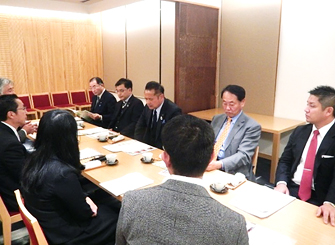
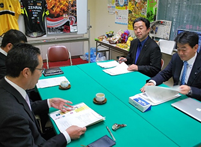
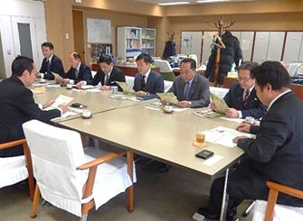
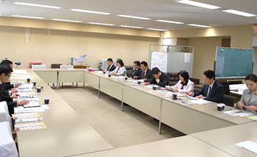
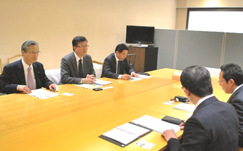
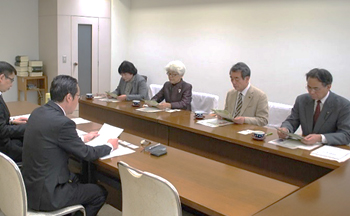

埼玉県議会各会派の皆様と懇談しました
埼玉県生協連は、さいたまの生協の活動や取り組みとくらしの願いを伝える機会として、埼玉県議会の各会派の皆様との懇談会を行っています。今年は、全会派の皆様と懇談ができました。（開催順に掲載しています）
懇談では、はじめに岩岡会長理事より｢2016年埼玉県生協連の主な取り組み、会員生協の組合員数と事業、自治体別組合員加入状況、県政要望(消費者被害防止、貧困調査、給付型奨学金、子ども食堂、フードバンク)、平成28年度市町村における消費生活関連事業調査結果の概要について｣紹介し、その後、意見交換しました。
自由民主党県議団役員の皆様との懇談会
- 【日 時】
- 12月6日(火)17：00～18：30
- 【場 所】
- 浦和ロイヤルパインズホテル5階｢四季彩｣
- 【出席者】
- 自民党県議団：小谷野五雄団長、小島信昭幹事長、小林哲也副団長
土屋惠一副団長、田村琢実政調会長
- 埼玉県生協連：岩岡宏保会長理事、滝澤玲子常務理事、今野、加藤、根岸
【懇談】(抜粋)
○子ども食堂についてどの程度実施されているのか。その対象者や衛生管理などの法的整備状況を教えてほしい。育児放棄の助長にならないのか。→連絡協議会が発足していないため箇所数、実施状況などの情報は限定的。民間ボランティアで先行しており、支援を必要とする家庭の探索、地域からの見られ方、対象者の幅、継続性についての課題があります。
○フードバンクに関連して、食品スーパーでは相当の食品廃棄が発生しているようだが。
→消費期限の1/3ルールが業界では常識となっており、メーカー・小売り・消費者で分け合う現状がある。イベント等のフードドライブ、防災備蓄品の入替等が今後も増えていきます。

埼玉県議会無所属改革の会の皆様との懇談会
- 【日 時】
- 12月8日(木)16：15～17：15
- 【場 所】
- 埼玉県県議会無所属改革の会控室
- 【出席者】
- 無所属改革の会県議：中川浩代表、木下博信県議
- 埼玉県生協連：岩岡会長理事、今野(事務局)
【懇談】(抜粋)
○東松山の事件を受けて、発生元の改善策として、子どもの居場所づくりが必要とされている。具体的には子ども食堂を全県で展開できると良い。
○児童相談所は虐待問題を抱え込んでしまい地域との連携が乏しい。この子が食べられない、虐待を受けているなどの情報を議員が介在することで、居場所づくりにつなげることができる。
○フードバンクは、子どもだけでなく親もメリットを感じるはず。生協連のこうした取り組みはもっと注目されるべき。

埼玉県議会無所属県民会議の皆様との懇談会
- 【日 時】
- 12月15日(木)11：05～11：55
- 【場 所】
- 埼玉県県議会無所属県民会議控室
- 【出席者】
- 無所属県民会議県議：鈴木正人代表、大嶋和浩県議、並木正年県議、
石川忠義県議、菅原文仁県議、岡重夫県議、醍醐清県議
- 埼玉県生協連：岩岡会長理事、今野(事務局)
【懇談】(抜粋)
○見守りネットワークと地域協議会の違いについて教えてほしい。
→見守りネットワークは命と健康への関与が目的であり、安全地域協議会はプラス高齢者の被害防止を目的としています。
○フードバンクについて、コンビニやトラック協会との連携は検討していますか。
→コンビニは賞味期限が短い商品が多く、賞味期限切れの食品はフードバンクでは集品対象外です。ストックと流通が課題となっておりトラック協会との連携ができると良い。

埼玉県議会民進党・無所の会の皆様との懇談会
- 【日 時】
- 12月16日(金)13：30～14：15
- 【場 所】
- 埼玉県県議会民進党・無所の会控室
- 【出席者】
- 民進党・無所属の会県議：浅野目義英代表、山根史子県議、江原久美子県議
水村篤弘県議、山本正乃県議、田並尚明県議、畠山稔県議、吉田芳朝県議
- 埼玉県生協連：岩岡会長理事、今野(事務局)
【懇談】(抜粋)
○フードバンクについて2～3年前に議会で質問し、県からは周知や保管場所の提供等の回答がありました。現在のフードバンク運営協議会としての要望は。
→これまで労福協が単独で頑張ってきたが、運営団体が増加し資金面で前進。課題として、在庫保管スペースと引き取りの手間と仕分けが課題です。
○消費者被害防止サポーターの登録数の差異、サポーター認知度の市町村の差異、市町村への具体的な働きかけ、地域協議会と見守りネットワークの連携について教えてほしい。
→消費者被害防止サポーターの登録数の差異は登録人数が増加している市町村もあり調査日とのズレも生じているので精査していきたい。市町村によってサポーターの認知度に高低がありますが、高木議員の議会質問で認知度はアップしています。県はサポーター人数を人口1万人に1人の割合を目標にしており、人口比でサポーターが少ない市町村に養成講座の働きかけをお願いしたい。また、見守りネットワークは命と健康への関与が目的であり、安全確保地域協議会はプラス高齢者の被害防止を目的としています。ただし努力義務となっており、議員からの働きかけを期待します。

埼玉県議会公明党議員団の皆様との懇談会
- 【日 時】
- 12月20日(火)13：30～14：20
- 【場 所】
- 埼玉県県議会公明党県議団控室
- 【出席者】
- 公明党議員団：西山淳次団長、蒲生徳明県議、藤林富美雄県議
埼玉県生協連：岩岡会長理事、今野(事務局)
【懇談】(抜粋)
○知人が架空株式購入で被害にあったことも聞くが、消費者被害防止サポーターとはどんな内容か教えてほしい。
→埼玉県から委託を受け、現在280人のサポーターがいます。内容は啓発活動や見守りが中心で、今後県民1万人に1人の割合で養成していく予定です。
○子ども食堂は参議院選挙の党の公約として位置づけました。一方、非正規雇用で働く家庭への直接的な支援も必要ですが、賃上げや正規雇用の拡大も必要です。
→生協組合員の自発的な子ども食堂の取り組みや組織的な対応も含め、全国で広がりを見せています。貧困の実態調査は沖縄県で行っていますが、対策を実施するため調査はその前提となります。
○離婚率の上昇で母子家庭が増加し、県の就学支援金も年々増加傾向となっています。
→貧困応急対応として子ども食堂やフードバンクが必要とされる状況。困窮者自立支援法のカバーできない分野で、民間の活動として広がっています。

日本共産党埼玉県議会議員団の皆様との懇談会
- 【日 時】
- 12月21日(火)13：30～14：30
- 【場 所】
- 埼玉県県議会日本共産党県議団控室
- 【出席者】
- 日本共産党埼玉県議会議員団：前原かづえ県議、金子正江県議
秋山文和県議、村岡正嗣県議
- 埼玉県生協連：岩岡会長理事、今野(事務局)
【懇談】(抜粋)
○サポーターと各消費生活支援センターとの関係について、都市部と農村部の消費者被害の傾向について教えてほしい。
→サポーターは4つの支援センター単位に交流会を実施し、終了時にセンター訪問する事例もある。4つの支所・本所とサポーターとの連携は推進員が担います。各市町村窓口はPIO-NETでつながっているので都市部・農村部のデータはありますが、そのデータは当方では持ち合わせていません。
○子どもの貧困実態調査について、どういう調査がポイントとなるのですか。
→家計収入や、扶養等の支出が必要となります。相対的貧困世帯とは、世帯収入の中央値の半分以下が目安となります。
